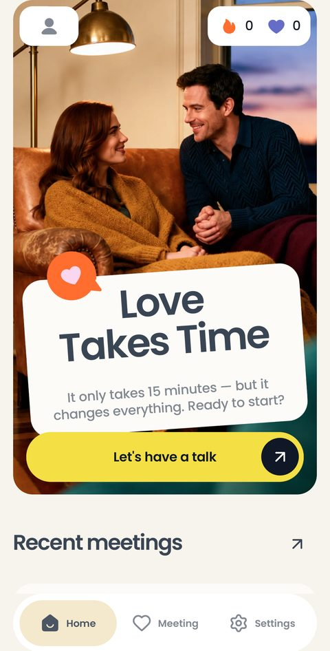
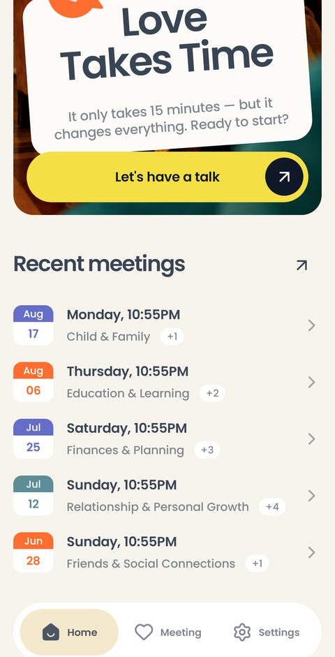
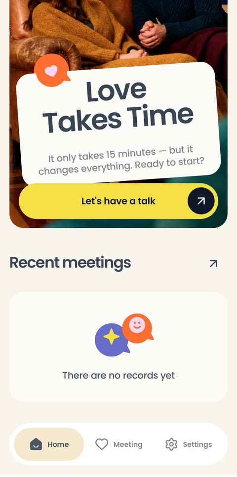
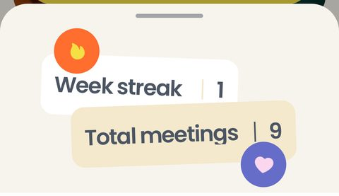
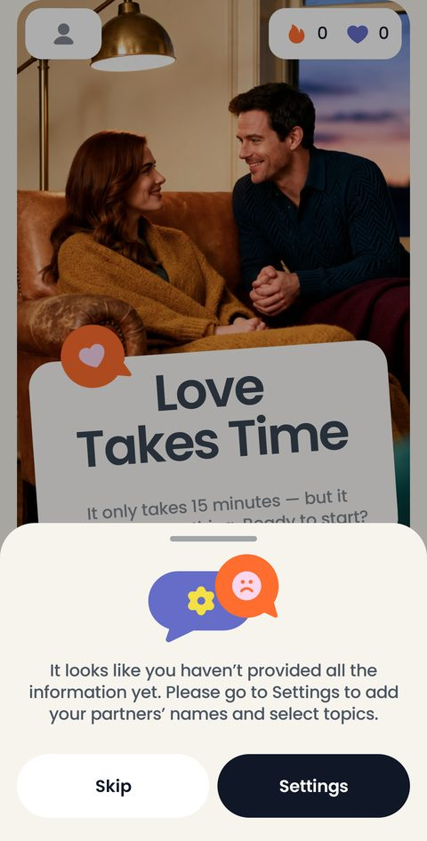
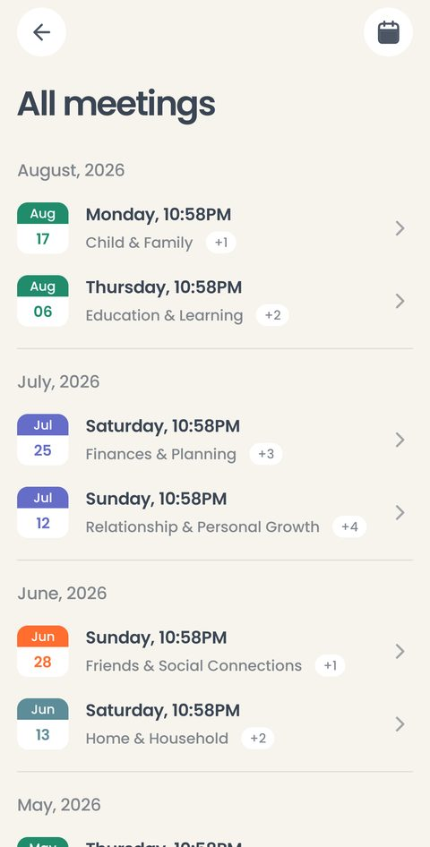
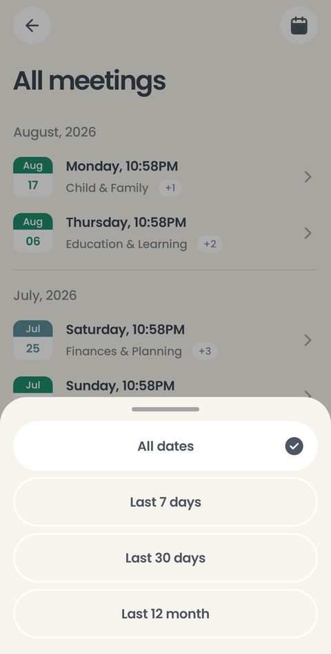
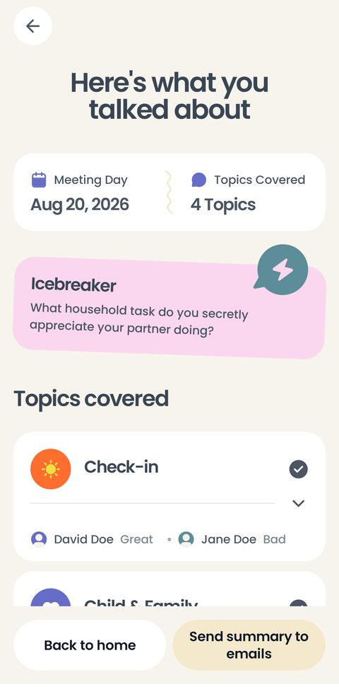

Куда пара попадает каждый раз, открывая приложение: одна кнопка «поговорить», два счётчика и история встреч. Здесь же — архив за все месяцы и фильтр по датам.
Вкладка Home. Баннер не меняется — так его нарисовал дизайнер.

Фотография во всю ширину, поверх неё карточка Love Takes Time с обещанием «пятнадцать минут» и жёлтая кнопка Let's have a talk — единственное действие, которого от пары ждут.
В левом верхнем углу иконка профиля, в правом — пилюля с двумя счётчиками: огонёк и сердце. Внизу плавающий таб-бар: Home, Meeting, Settings.
Под капотом: экран читается из базы на самом телефоне, интернет ему не нужен. Иконка профиля открывает настройки — в макете нарисована сама иконка, но не то, куда она ведёт; это наше решение и вопрос дизайнеру.

Под баннером — Recent meetings: пять последних встреч. В каждой строке плашка месяца и числа, день недели со временем, первая тема и счётчик остальных («+2»). Стрелка у заголовка ведёт в полный архив.
Под капотом: темы в строке — те, что были у встречи на момент её проведения. Если пара потом поменяет набор тем, прошедшие встречи не перепишутся: каждая фиксирует свои темы при старте.

Пустое состояние: на месте списка — картинка и строка There are no records yet. Так выглядит приложение сразу после онбординга.
Под капотом: у этого состояния свой кадр в макете, и он на 1065 dp — длиннее экрана телефона. Поэтому в сверке с Figma он проверяется прокрученным.

Нажатие на пилюлю поднимает шторку с расшифровкой: Week streak — сколько недель подряд была хотя бы одна встреча, Total meetings — сколько встреч всего.
Под капотом: сердце здесь — не лайк и вообще не оценка: это счётчик проведённых встреч. Оба числа считаются из локальной базы при каждом открытии экрана, отдельно нигде не хранятся и обнуляются вместе с историей.

Если пара пропустила онбординг и в приложении нет ни одного имени, перед встречей поднимается шторка: сходите в настройки, впишите имена и выберите темы. Кнопки — Skip и Settings.
Под капотом: предупреждает, но не запрещает: Skip ведёт во встречу, и пара пройдёт её как Partner 1 и Partner 2.
Вкладка Meeting в таб-баре. Все встречи, какие были, сгруппированные по месяцам.

Заголовок месяца, под ним строки встреч — такие же, как на главной. Строка открывает встречу целиком.
В правом верхнем углу — иконка календаря: это фильтр.
Под капотом: экран показывает только завершённые встречи. Прерванная лежит черновиком и в архив не попадает, пока пара её не доведёт.

Четыре периода: All dates, Last 7 days, Last 30 days, Last 12 month. Выбранный отмечен галочкой.
Под капотом: фильтр живёт, пока экран открыт, и не запоминается. Пустого состояния «под фильтр ничего не попало» в макете нет — вопрос дизайнеру.

Встреча из архива открывается тем же экраном, что и итог сразу после разговора. В макете это два кадра, но тексты в них совпадают дословно, поэтому экран один. Подробный разбор — в разделе Встреча.
Под капотом: всё, что показано, лежит в локальной базе: настроение, планы, благодарности, вопрос-разогрев. Ничего не досчитывается заново при открытии.
Вся история выгружается простым текстом через системное «Поделиться» — в заметки, в мессенджер, письмом. Формат заказчик подтвердил: простой текст.
История лежит на одном телефоне. Переноса на новый и восстановления в макете нет — записано как вопрос, который пользователи зададут первым.
Сердце в счётчике и сердце на вкладке Meeting — это иконки, а не оценки. Ставить лайк встрече, теме или заметке в продукте негде и не задумано.